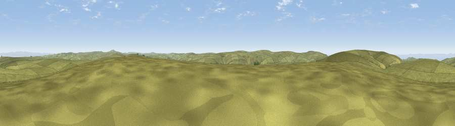

Viewpoint near Simonsbath
#11200 in England · top 25% of its area beats it · near SimonsbathThe view, rendered

A 360° render of this exact spot computed from the terrain model, tree cover and land cover — summer colours, afternoon light, calibrated against photographs of famous viewpoints. Real trees, hedges and buildings will differ in detail.
The panorama
Grey silhouette: terrain skyline in each direction (720 bearings, Earth curvature and refraction included). Dashed green: skyline with trees (+15 m) and buildings (+8 m) as obstacles. Blue strip: how far the ground is visible on each bearing.
Where the view opens
Wedge length = distance to the farthest visible ground on that bearing (vegetation-aware). Rings at 10, 25 and 50 km.
What fills the view
94% grassland · 4% water · 2% woodland
Angular shares of the visible panorama (visual magnitude), not map area. Landscape diversity 0.13 (0–1 Shannon).
Key numbers
More beautiful places nearby
The staircase of upgrades: each row has a higher view potential than everything closer. Driving times are estimates from straight-line distance, calibrated against real road routing — check an actual route before setting out.
| Place | Direction | Drive | Score |
|---|---|---|---|
| Viewpoint near Challacombe | WNW · 4 km | ~10 min | 68.6 |
| Viewpoint near Challacombe | WNW · 5 km | ~11 min | 69.1 |
| Viewpoint near Simonsbath | S · 5 km | ~12 min | 73.1 |
| Viewpoint near Brayford | SSW · 5 km | ~12 min | 74.1 |
| Viewpoint near Challacombe | WSW · 6 km | ~12 min | 75.8 |
| Viewpoint near Challacombe | WNW · 6 km | ~14 min | 77.1 |
| Viewpoint near Lynmouth | NNW · 7 km | ~15 min | 81.0 |
| Kipscombe Hill | N · 8 km | ~16 min | 83.3 |
51.15810, -3.77779 · source: screening · position refined by local search. Computed location — check access rights before visiting.